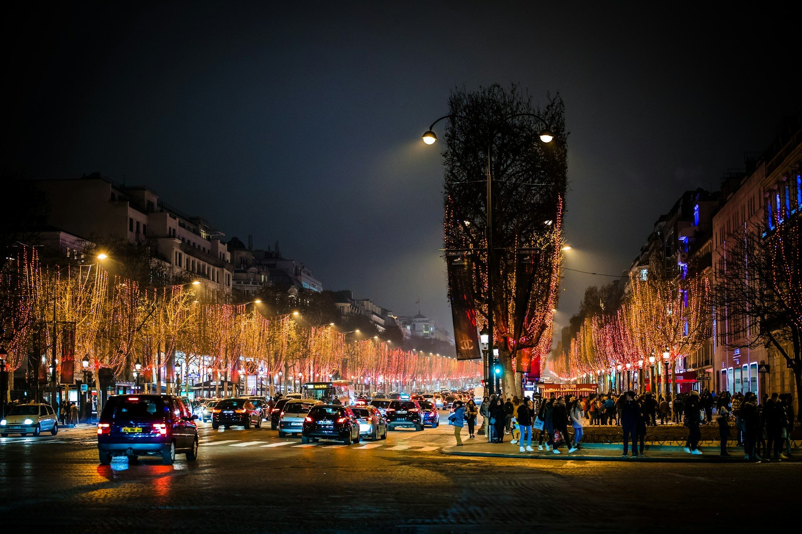

New Year’s Eve 2026: where to celebrate in Paris and on the French Riviera
Free fireworks on the Champs-Élysées, dinner on the Seine or a party in the mountains above Nice: our ideas for welcoming 2027.
Photo: Stephanie LeBlanc / Unsplash
31 December falls on a Thursday in 2026. Whether you want a free open-air party or a dinner to book, here is what is planned in Paris and on the French Riviera, with the announced times.
In Paris: the Champs-Élysées fireworks
The City of Paris holds a free event on the Champs-Élysées, from the Arc de Triomphe to Place de la Concorde. From 11.50pm, a video-mapping show is projected onto the Arc de Triomphe, followed by the countdown. At midnight, a fireworks display of about ten minutes is set off to music. The party ends at around 12.20am.
- Arrive early: to be in line with the Arc de Triomphe, get there well before 11pm.
- Security checks: bags are searched; glass, bangers and private fireworks are banned.
- Getting home: expect the nearest metro stations to be closed or packed, and walk a few stops.
In Paris: dinner on the Seine or at a cabaret
For a sit-down New Year’s Eve, dinner cruises on the Seine and cabarets such as the Moulin Rouge hold special evenings on 31 December. These are the first seats to sell out: book now. See our guide to Seine cruises.
On the French Riviera
- Nice: the city celebrates on the Promenade des Anglais and in Old Nice, where restaurants serve New Year’s Eve menus. The city’s official programme is not out yet; we will update this page as soon as it is. At the Théâtre de la Cité, the Burlesque Follies cabaret holds a New Year’s Eve show at 10pm, €80 with two glasses of champagne and the dance party.
- Isola 2000: 1 hour 30 from Nice, the resort celebrates from 6pm, free of charge, with a ball, a torchlight descent by the ski instructors and fireworks. See our Isola 2000 guide.
- Auron: free New Year’s Eve party on the resort’s main square. See our Auron guide.
Our tips
- Book early: dinners, cruises and hotels are often full by early December.
- Plan your way back: taxis and ride-hailing cars are scarce and expensive after midnight; book your ride in advance.
Read next


Tours and activities
New Year’s Eve dinner cruise, a cabaret night or a tour of Nice: book before the seats go.
-
Seine dinner cruises
Meals on board, from simple menus to fine dining.
-
Moulin Rouge dinner and show
Dinner at 7pm, then the revue at 9pm.
-
Nice guided tours and food tours
Old Town walks, Niçoise food tastings, bike or segway tours.
Partner links.
Frequently asked questions
What time are the Champs-Élysées fireworks?
At midnight, after a video-mapping show on the Arc de Triomphe that starts at 11.50pm. The fireworks last about ten minutes and the event ends at around 12.20am.
Is the Champs-Élysées New Year’s Eve party free?
Yes, the event run by the City of Paris is free, with controlled access and bag searches.
Are there fireworks in Nice on 31 December 2026?
The City of Nice has not yet published its official programme. At Isola 2000, 1 hour 30 from Nice, fireworks are announced at the free New Year’s Eve party.